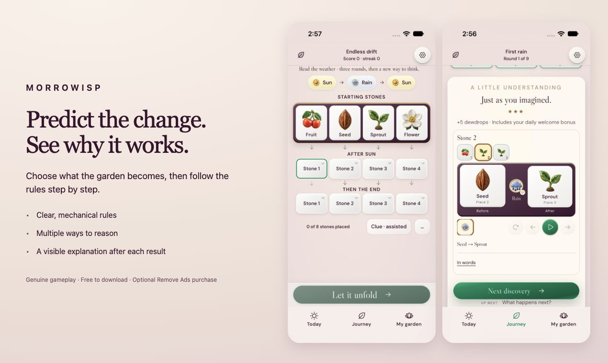

A small garden. A reasoning puzzle.
How to play Morrowisp
Read the starting stones, follow the weather actions, then predict what changes.
1. Read the garden and its rules
Each stone has a state, such as Seed or Sprout. The puzzle shows the available actions and explains their rules. Start with the short guided introduction; the chapters add new ideas as you go.
For example, Rain changes a Seed into a Sprout. The rule table tells you what happens to the other states too. Later actions can move stones or depend on their neighbors, so read the whole board.
2. Follow the sequence in order
Apply the first action to the starting garden, then apply the next action to that result. Do not apply every action to the original stones. In a prediction puzzle, fill the requested stones before checking your answer.
Other puzzles ask you to find a missing action, reach a target garden, compare two gardens, or discover a hidden rule. Read the task for that round; the same vocabulary can ask a different question.
3. Watch the explanation
The reveal runs the rules step by step. Use the rules, clues and replay to understand where your prediction changed. The point is to see why an answer works, then carry that understanding into the next puzzle.

Choose your next visit
- Daily discovery: three rounds with a clear ending, plus an archive of earlier days.
- Chapters: six free chapters introducing new rules and ways to think.
- Drift and practice: more puzzles when you want to keep exploring.
- Garden: arrange ceramic pieces earned through play.
- Workshop: create and share your own puzzles.
Is Morrowisp free?
Yes. All chapters and daily puzzles are free. Some modes have occasional ads between rounds, never during a puzzle. The first chapter and daily/archive puzzles are ad-free. An optional one-time purchase removes between-round ads permanently.
Where can I play?
Morrowisp is available for iPhone and iPad on iOS / iPadOS 16 or later. Instructions and written help support English, Spanish and Simplified Chinese; puzzle labels and the rest of the interface remain English.